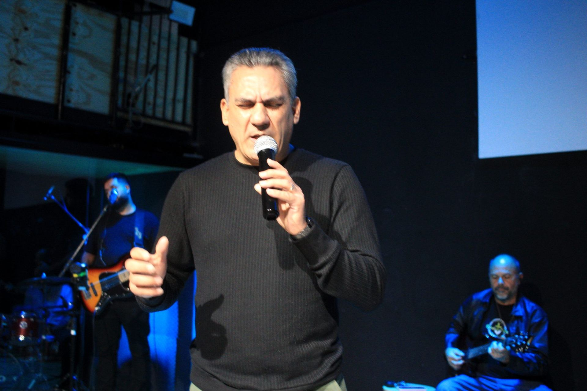
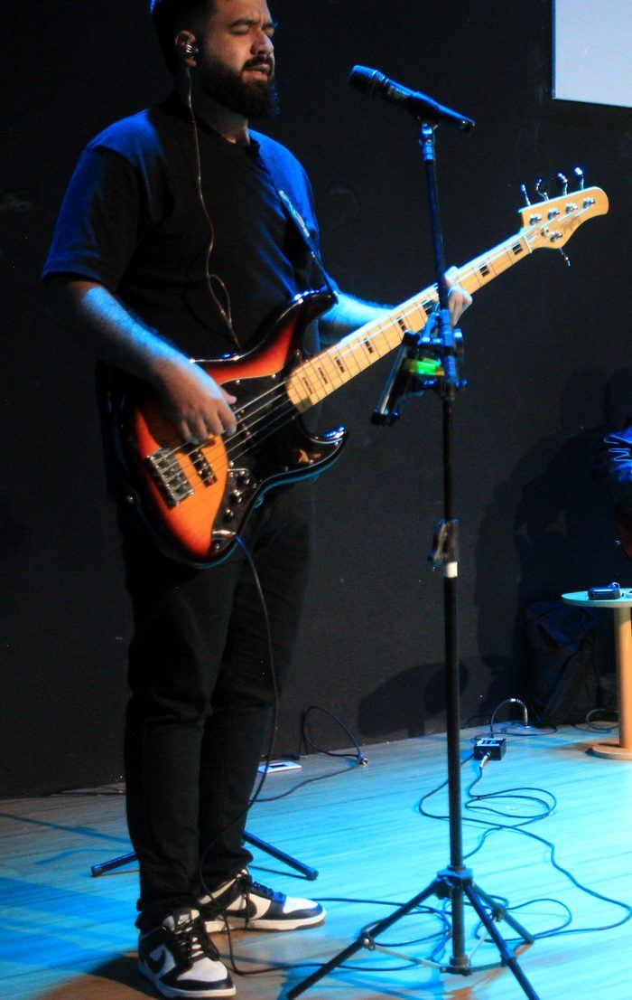
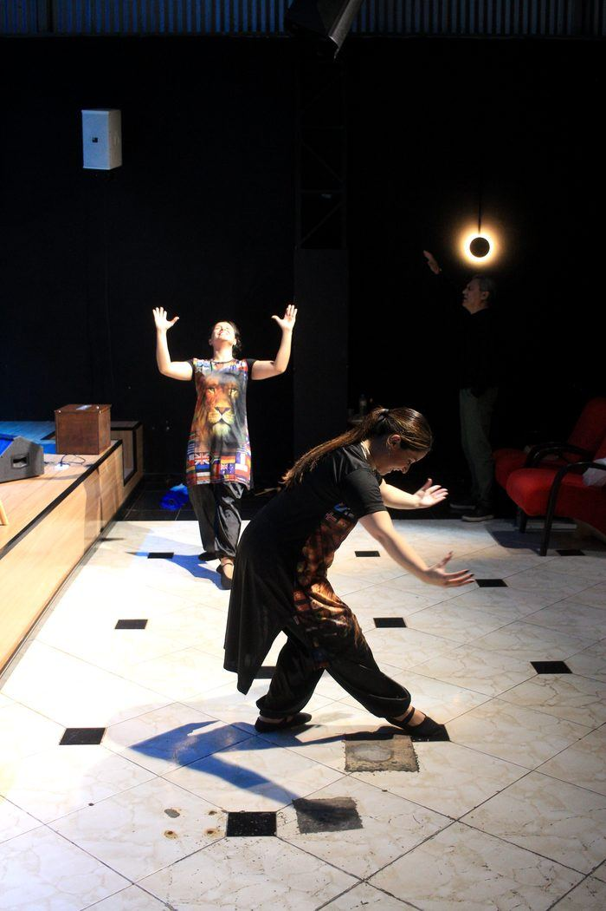
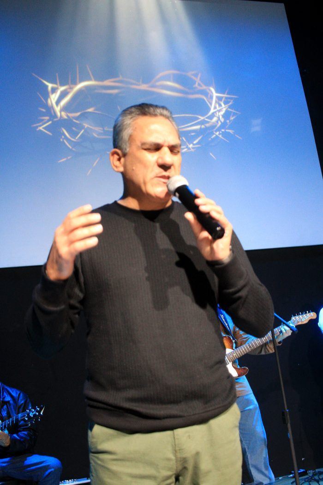

Quem somos
Uma comunidade de fé, cuidado e relacionamentos.
A Comunidade Graça e Vida nasceu com o propósito de anunciar o Evangelho de Jesus Cristo, acolher pessoas e famílias e construir uma comunidade de fé fundamentada no amor de Deus, na comunhão e no cuidado com o próximo.
Conheça nossa história
Nossa comunidade
Há espaço para você aqui.
 Famílias
Famílias
Jovens
Mulheres
Homens Crianças
Crianças Impacto Social
Impacto SocialCélulas
A igreja também acontece nas casas.
De segunda a sábado, grupos pequenos se reúnem pela cidade para orar, estudar a Palavra e cuidar uns dos outros. É o jeito mais fácil de fazer amigos e não caminhar sozinho.
A equipe indica a célula mais perto da sua casa.
- Toda semanaDe segunda a sábado, em dias e horários diferentes.
- Perto de vocêEncontros em casas de vários bairros de Telêmaco Borba.
- Para todosNão precisa ser membro. Chegue como você está.

Programação
Esteja conosco.
Encontre um momento para participar dos nossos cultos e encontros. Será uma alegria receber você.
Domingo, 19h · Culto
Sexta, 6h e 20h · Oração
Nosso endereço
Rua Independência, 259
Centro · Telêmaco Borba
Ver no mapa
Próximo culto: domingo · 19h
Como chegar
Rua Independência, 259
Centro · Telêmaco Borba (PR)
- Domingo19h · Culto de celebração
- Sexta6h e 20h · Oração
- 2ª quarta do mês20h · Encontro do mês
- Último sábado20h · Noite dos jovens
Liderança
Pessoas que cuidam de pessoas.
Nossa liderança está aqui para servir. Se precisar de uma palavra, de oração ou de alguém para conversar, procure a gente no domingo ou pelo cadastro do site.

Mensagens
Palavra que
edifica a sua fé.
Assista às mensagens, acompanhe as séries e aprofunde sua caminhada. Culto ao vivo todo domingo, 19h.
Assistir ao vivoMissões
Moçambique: a nossa família do outro lado do oceano.
Toda semana garantimos alimentação para as crianças da comunidade, num espaço de acolhimento que montamos lá. Veja as fotos e descubra como ajudar.
DÍZIMOS E OFERTAS
Quer contribuir com a obra?
Se desejar, você pode contribuir pelo PIX. Favorecido: Comunidade Graça e Vida.
Chave PIX · CNPJ
27.113.399/0001-73